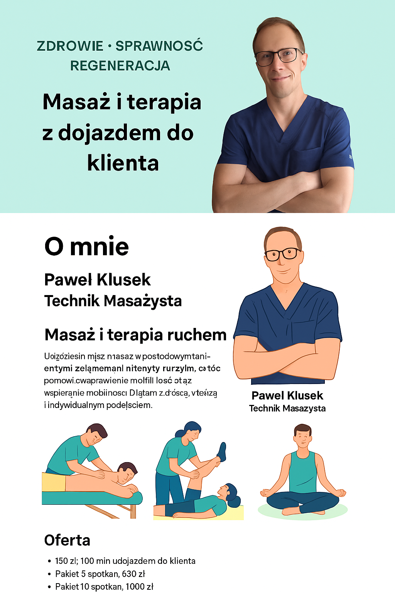
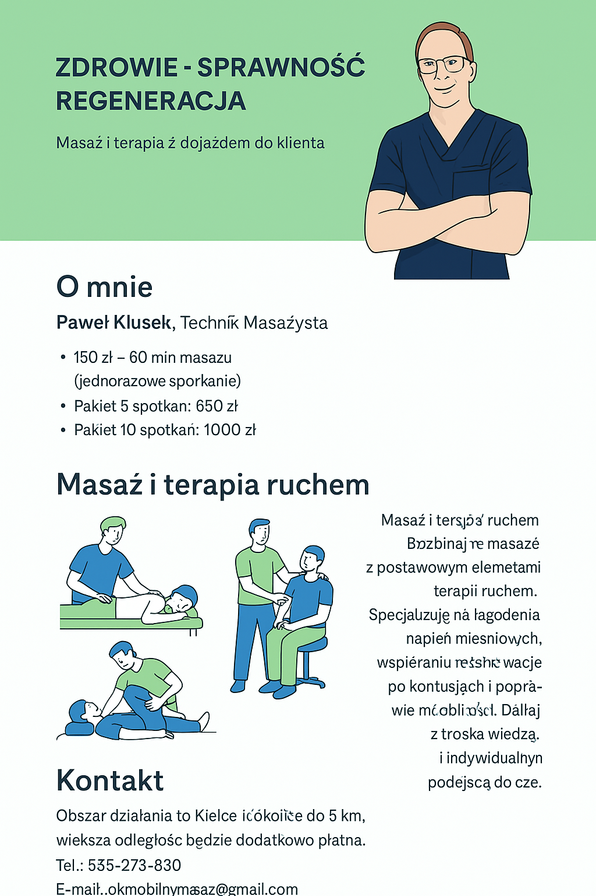
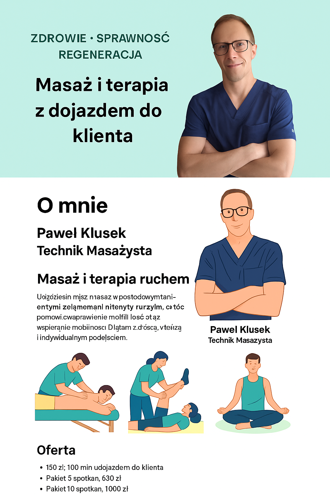
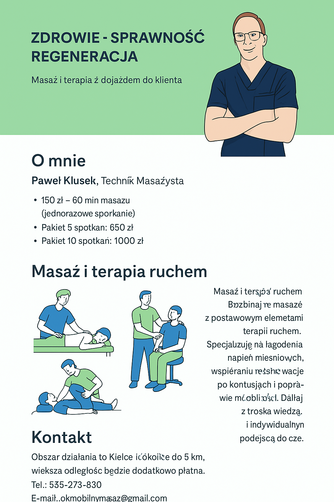

Nazywam się Paweł Klusek i jestem technikiem masażystą. Oferuję mobilne masaże wykonywane z pełnym zaangażowaniem i troską o Twoje zdrowie. Przyjeżdżam z profesjonalnym stołem i tworzę komfortowe warunki do relaksu i regeneracji w Twoim domu.
Paweł Klusek, Technik Masażysta
 


